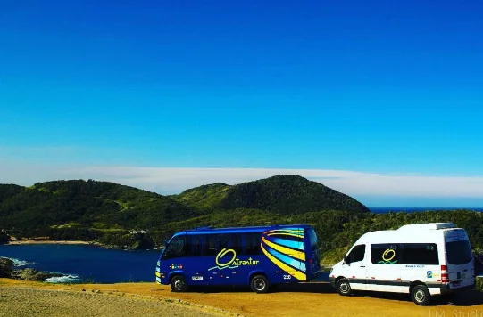

Fretamento de micro-ônibus e vans em Rio das Ostras
Micro-ônibus, vans e carros executivos com motorista para excursões, eventos, empresas e grupos, com saída de Rio das Ostras para todo o Sudeste.
Pedir orçamentoFretamento sob medida para o seu grupo
Em muitas situações, fretar um veículo é a opção mais segura e econômica para levar um grupo. A Logix monta a solução conforme o tamanho do grupo, o trajeto e o horário, com frota própria e motorista da casa.

Para quem é o nosso fretamento
- Empresas: transporte de colaboradores, visitas técnicas e eventos corporativos.
- Turismo e excursões: viagens de grupo, bate e volta e passeios pela Região dos Lagos.
- Escolas e igrejas: passeios pedagógicos, retiros e encontros.
- Casamentos e festas: transporte de convidados entre cerimônia, festa e hospedagem.
- Eventos esportivos e shows: ida e volta com horário combinado.
Carro executivo para grupos menores
Para até 4 passageiros, a Logix oferece carro executivo (Chevrolet Onix) com motorista. É a opção ideal para reuniões, visitas técnicas, transfer de convidados e viagens curtas com mais conforto e economia.
Fretamento eventual e contínuo
Atendemos tanto viagens pontuais quanto rotas recorrentes. No fretamento contínuo, a empresa define os horários e pontos de embarque e a Logix cuida de toda a operação.
Segurança em primeiro lugar
Veículos revisados, motoristas treinados e mais de 30 anos de experiência nas estradas do Rio de Janeiro e do Sudeste.
Do orçamento à viagem em 4 passos
Contato
Você envia origem, destino, data e número de passageiros.
Orçamento
Indicamos o veículo ideal e enviamos o valor.
Reserva
Veículo e motorista ficam reservados para a data.
Viagem
Saída pontual e suporte durante todo o trajeto.
Dúvidas sobre fretamento
Qual a diferença entre fretamento eventual e contínuo?
O fretamento eventual atende uma viagem específica, como excursão, evento ou casamento. O contínuo atende um trajeto recorrente, como o transporte diário de colaboradores ou estudantes.
O fretamento inclui motorista?
Sim. Todos os fretamentos da Logix incluem motorista da casa, com experiência em viagens curtas e longas.
Vocês fazem viagens para fora do RJ?
Sim. Atendemos toda a Região Sudeste, com saída de Rio das Ostras ou do ponto combinado com o cliente.